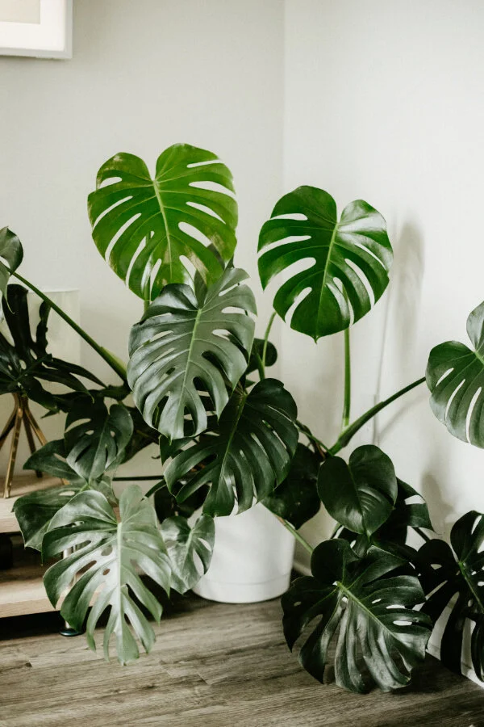

Monstera is a genus of 59 species of flowering plants in the arum family, Araceae, native to tropical regions of central and south America.
Monstera deliciosa, the Swiss cheese plant or split-leaf philodendron is a gorgeous plant.
The common name "Swiss cheese plant" is also used for the related species from the same genus, Monstera adansonii!